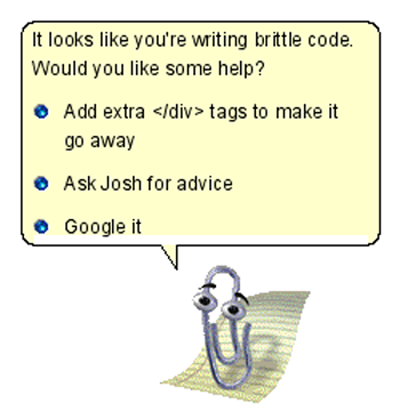

Run all unit tests:
rake test:units
THAT’S WHAT SHE SAID
Run all unit tests:
rake test:units
This checks to see if the recent_blogs method works as intended
def test_recent
Blog.delete_all
b= Blog.new(:title => "My Test blog",
:body => "blah blah",
:created_at => "2008-05-10 17:31:51",
:updated_at => "2008-05-10 17:31:51")
assert b.save, b.errors.full_messages
assert_equal(1, Blog.recent_blogs.size)
endSimulates HTTP GET Request
def test_should_get_index get :index assert_response :success assert_not_nil assigns(:blogs) end
Run all functional tests:
rake test:functionals
A fixture is YAML file that contains sample data to use for testing
one: title: My First Blog body: blah blah blah two: title: My Cool Blog body: blah blah blah
To use, place this at the top of your *_test.rb file: fixtures :blogs.yml